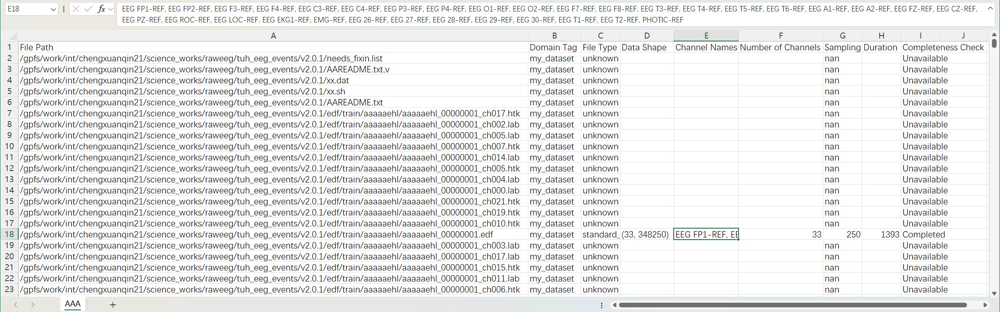
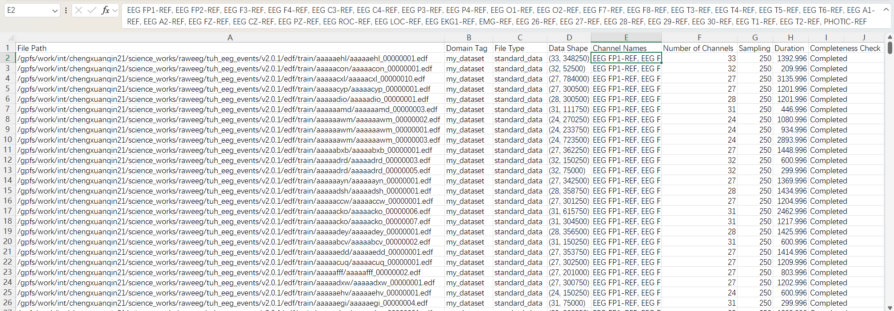
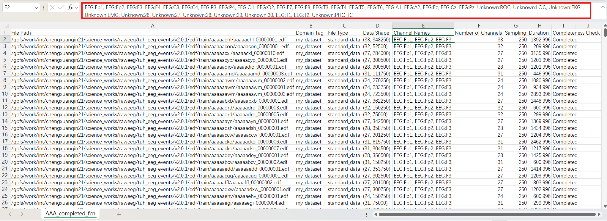

Formatting Channel Names and Inspecting Metadata#
This tutorial guides you through using the EEGUnity library to format channel names and inspect metadata in EEG datasets. By the end of this tutorial, you’ll know how to load a dataset, format channel names, and check metadata correctness.
Requirements#
EEGUnity library: Install EEGUnity in your environment.
Microsoft Excel or any CSV editor for inspecting metadata files.
Steps#
Step 1: Load the Dataset#
Create an instance of UnifiedDataset, specifying the dataset path and a custom tag to represent this data.
from eegunity import UnifiedDataset
input_path = r'path/to/dataset' # Specify the directory containing your dataset
unified_dataset = UnifiedDataset(dataset_path=input_path, domain_tag="my_dataset")
Step 2: Save the Initial Locator File#
Save the locator file, which stores metadata information about the dataset. This file can be opened in CSV-editing software like Microsoft Excel for easier inspection.
unified_dataset.save_locator(r'./locator/my_dataset_raw.csv')
The locator file might look like this:

Step 3: Select EEG data#
Select the data file and save the loactor.
unified_dataset.eeg_batch.sample_filter(completeness_check='Completed')
unified_dataset.save_locator(r'./locator/my_dataset_completed.csv')
The locator file might look like this:

Step 4: Format Channel Names#
Standardize the channel names in your dataset by using the eeg_batch.format_channel_names method. This ensures that the channel names in your dataset follow a consistent format—<ChannelType>:<ChannelName>. In such format, EEGUnity can automatically set channel type and extract its name, when using get_data_row("is_set_channel_type=True).
unified_dataset.eeg_batch.format_channel_names()
unified_dataset.save_locator(r'./locator/my_dataset_format_channel_name.csv')
The locator file might look like this:

Note: Open this locator file in Microsoft Excel (or other CSV software) to confirm that the Channel Names column has been correctly formatted.
Correction: If you find errors in the metadata, such as incorrect channel names, you can make adjustments directly in the CSV editor (like Microsoft Excel).
Step 7: Reload the Dataset#
Once you have corrected any errors, reload the dataset using the updated locator file. EEGUnity will now compare the locator’s metadata with the raw data. If there are conflicts, EEGUnity prioritizes the locator’s metadata.
unified_dataset = UnifiedDataset(locator_path=r'./locator/my_dataset_format_channel_name.csv')